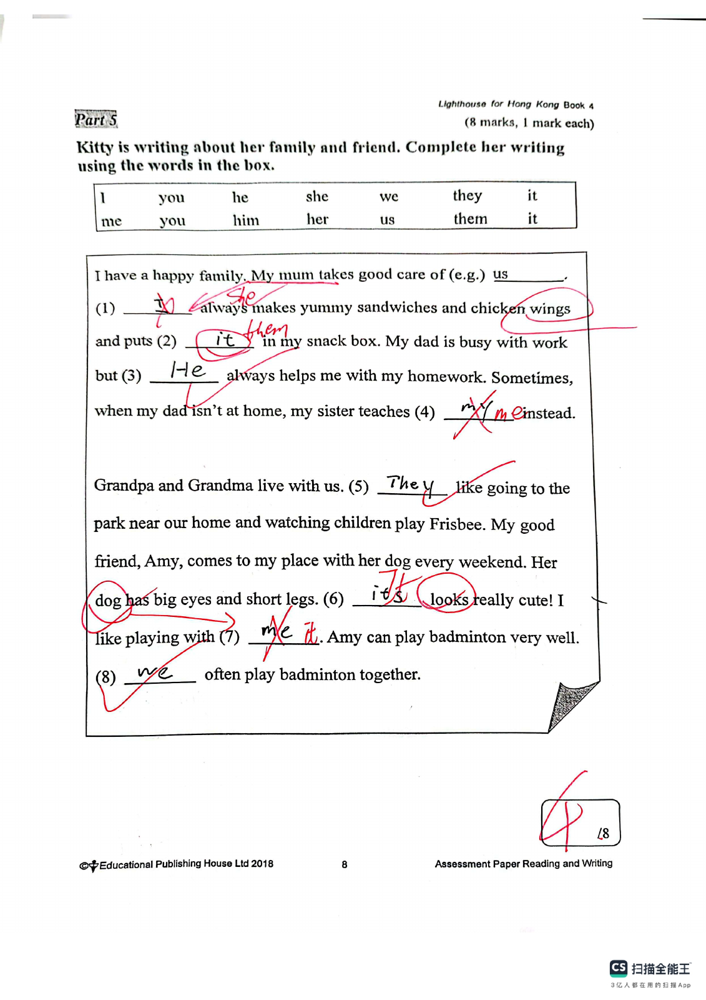
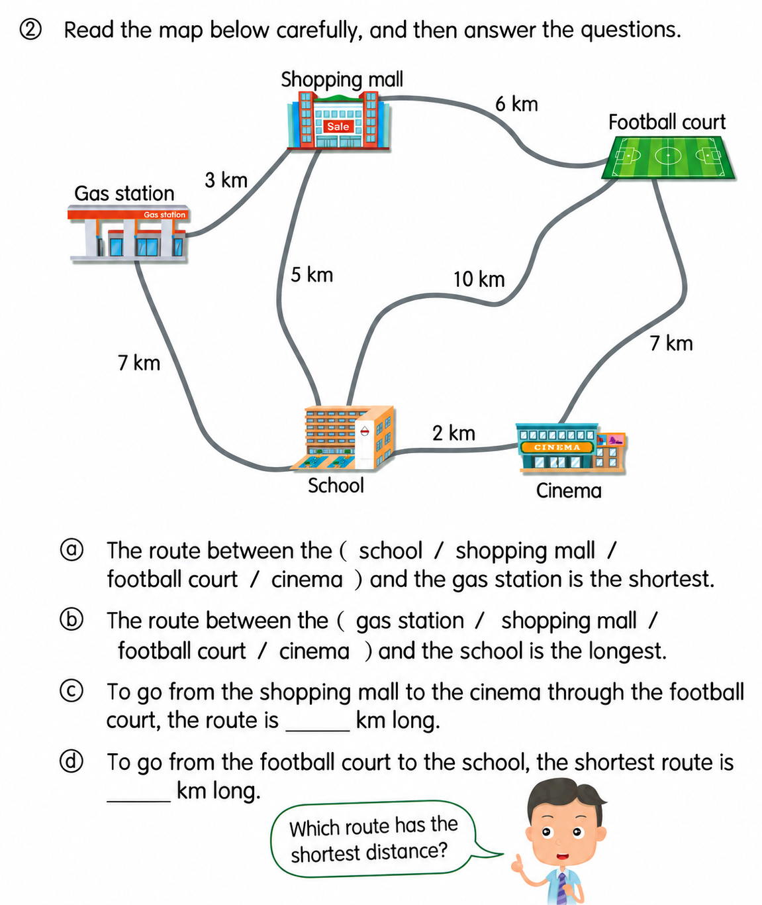

Answer: (a) 30468; (b) 86403
已掌握
| # | 单词/词组 | 中文意思 | 例句/说明 | 已掌握 |
|---|---|---|---|---|
| noun 名词 | ||||
| 1 | birthday | 生日 | My birthday is in May. | |
| 2 | stamp | 邮票 | I put a stamp on the postcard. | |
| 3 | pet | 宠物 | My pet is a hamster. | |
| 4 | window | 窗户 | Open the window, please. | |
| 5 | pupil | 小学生 | The pupil reads a book. | |
| 6 | god | 神明 | Zeus was a god in Greek stories. | |
| 7 | clinic | 诊所 | I went to the clinic for a check-up. | |
| 8 | sound | 声音 | I heard a strange sound outside. | |
| verb 动词 | ||||
| 9 | have a meal | 吃饭 | We have a meal together every evening. | |
| 10 | dig | 挖 | The dog can dig a hole. | |
| phrase 短语 | ||||
| 11 | turn left | 左转 | Turn left at the corner. | |
| 12 | good night | 晚安 | I say good night before bed. | |
| 13 | clean the dishes | 洗餐具 | We clean the dishes after dinner. | |
| noun phrase 名词短语 | ||||
| 14 | MTR station | 地铁站 | The MTR station is near my home. | |
| adjective 形容词 | ||||
| 15 | impolite | 不礼貌的 | It is impolite to shout. | |
| 16 | thirsty | 口渴的 | I am thirsty after running. | |
| pronoun 代词 | ||||
| 17 | them | 它们 | I can see them in the garden. | |
| uncategorized 未分类 | ||||
| 18 | wait | 等待 | Please wait for me at the gate. | |
| 19 | sweep | 打扫 | Please sweep the floor. | |
| 20 | fold | 折叠 | Please fold the paper in half. | |
| # | 单词/词组 | 中文意思 | 例句/说明 | 已掌握 |
|---|---|---|---|---|
| adjective 形容词 | ||||
| 1 | rich | 富有的 | Now Billy was rich. | |
| noun 名词 | ||||
| 2 | parrot | 鹦鹉 | The parrot can talk. | |
| 3 | choir | 合唱团 | My sister sings in the school choir. | |
| 4 | volunteer | 志愿者 | A volunteer helps us plant trees. | |
| 5 | astronaut | 宇航员 | The astronaut goes into space. | |
| 6 | costume | 戏服 | I wear a costume at the festival. | |
| 7 | tutor | 家庭教师 | My tutor helps me study. | |
| 8 | adjectives | 形容词 | Adjectives describe nouns. | |
| noun phrase 名词短语 | ||||
| 9 | a carrot | 胡萝卜 | I put a carrot in the soup. | |
| 10 | a potato | 土豆；马铃薯 | First wash a potato and cut it open. | |
| 11 | a purse | （女式）钱包 | I gave her a purse. | |
| verb 动词 | ||||
| 12 | complete | 完成 | Please complete the sentence. | |
| 13 | reply | 回复 | Please reply to my email. | |
| 14 | locate | 定位 | We can locate the place on the map. | |
| 15 | chase | 追逐 | The dog may chase the ball. | |
| 16 | put | 放；放置 | Please put the vegetables into the pot. | |
| phrase 短语 | ||||
| 17 | simple present tense | 一般现在时 | The sentence "I walk to school" is in the simple present tense. | |
| verb phrase 动词短语 | ||||
| 18 | play tennis | 打网球 | I like to play tennis with my friend. | |
| 19 | play Chinese chess | 下中国象棋 | I can't play Chinese chess or Chinese checkers. | |
| 20 | go camping | 去露营 | I want to go camping. | |
| 21 | making models | 制作模型 | Hiro likes making models of robots. | |
| 22 | watch dragon boat races | 看龙舟比赛 | We watch dragon boat races every year. | |
| noun/verb 名词/动词 | ||||
| 23 | exercise | 锻炼 | Exercise is good for your health. | |
| number 数词 | ||||
| 24 | million | 一百万 | One million is 1,000,000. | |
| uncategorized 未分类 | ||||
| 25 | teenager | 青少年 | My brother is a teenager. He is fifteen. | |
| 26 | mid-year | 期中 | Our mid-year test is in January. | |
| 27 | shout | 喊 | Please do not shout in the library. | |
| 28 | campsite | 营地 | We put up our tent at the campsite. | |
| adverb 副词 | ||||
| 29 | accidentally | 偶然地；意外地 | I accidentally dropped my pencil. | |
| adjective phrase 形容词短语 | ||||
| 30 | end-of-year | 期末的 | We are getting ready for the end-of-year exam. | |
| # | 单词/词组 | 中文意思 | 例句/说明 | 已掌握 |
|---|---|---|---|---|
| time/date 时间日期 | ||||
| 1 | January | 一月 | January is the first month. | |
| 2 | March | 三月 | March is the third month. | |
| 3 | May | 五月 | May is the fifth month. | |
| 4 | Wednesday | 星期三 | Wednesday is a weekday. | |
| numbers 数字 | ||||
| 5 | one | 1 | One is 1. | |
| 6 | three | 3 | Three is 3. | |
| 7 | nine | 9 | Nine is 9. | |
| 8 | sixteen | 16 | Sixteen is 16. | |
| 9 | twenty | 20 | Twenty is 20. | |
| 10 | thirty | 30 | Thirty is 30. | |
| 11 | fifty | 50 | Fifty is 50. | |
| 12 | sixty | 60 | Sixty is 60. | |
| 13 | eighty | 80 | Eighty is 80. | |
| solid shape 立体图形 | ||||
| 14 | triangular prism | 三棱柱 | A triangular prism has triangular faces. | |
| 15 | hexagonal prism | 六棱柱 | A hexagonal prism has hexagonal faces. | |
| # | 单词/词组 | 中文意思 | 例句/说明 | 已掌握 |
|---|---|---|---|---|
| operations 运算 | ||||
| 1 | total | 总共的 | Find the total number of apples. | |
| 2 | be left | 剩下的 | How many apples will be left? | |
| geometry 几何 | ||||
| 3 | parallel | 平行 | Parallel lines never meet. | |
| 4 | curve | 曲线 | Draw a curve. | |
| 5 | parallel to each other | 相互平行 | The two lines are parallel to each other. | |
| question word 题目词 | ||||
| 6 | estimate | 估计 | Estimate the answer first. | |
| 7 | onwards | 向前；继续向前 | Count onwards from 20. | |
| 8 | match | 匹配 | Match the number to the word. | |
| place value 位值 | ||||
| 9 | 5-digit number | 五位数 | 12,345 is a 5-digit number. | |
| comparison 比较 | ||||
| 10 | fewer | 更少 | There are fewer apples in this box. | |
| 11 | most | 最多的 | Which group has the most? | |
| 12 | fewest | 最少的 | Which group has the fewest? | |
| time/date 时间日期 | ||||
| 13 | hour hand | 时针 | At three o'clock, the hour hand points to 3. | |
| 14 | minute hand | 分针 | At three o'clock, the minute hand points to 12. | |
| position 位置 | ||||
| 15 | behind | 后面 | The bag is behind the chair. | |
| 16 | back | 后面 | The desk is at the back of the room. | |
| operations calculation 运算 | ||||
| 17 | difference | 差 | The difference is the answer in subtraction. | |
| 18 | mixed operations | 混合运算 | Mixed operations use more than one operation. | |
| 19 | divide A by B | A 除以 B | Divide A by B. | |
| teacher math vocabulary 老师数学词汇 | ||||
| 20 | finish | 完成 | Please finish the calculation. | |
| 21 | start | 开始 | Start counting from ten. | |
| currency money 货币 | ||||
| 22 | pay for | 支付 | I pay for the book. | |
| 23 | change | 零钱 | Count the change after paying. | |
| measurement 测量 | ||||
| 24 | fill | 填满 | Fill the jug with water. | |
| 25 | height | 高度 | Measure the height of the box. | |
| 26 | length | 长度 | Find the length of the line. | |
| 27 | width | 宽度 | The rectangle has a length of 8 cm and a width of 5 cm. | |
| position order 位置和顺序 | ||||
| 28 | following | 下面的 | Answer the following questions. | |
| 句型结构 | ||||
| 29 | Angle ... is the largest. | 角......是最大的。 | Angle A is the largest. | |
| 30 | ... is to the north of ... | ......位于......的北侧。 | The playground is to the north of the hall. | |


